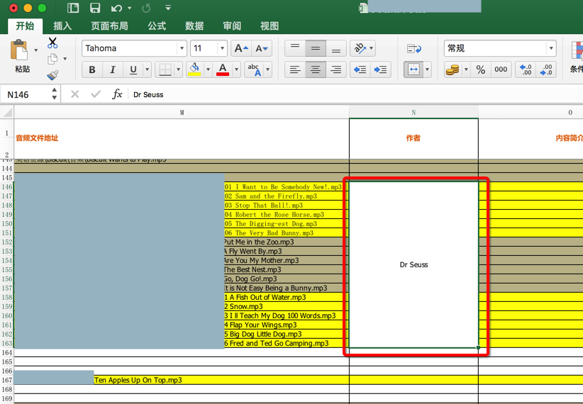
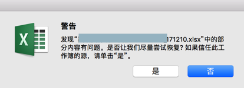
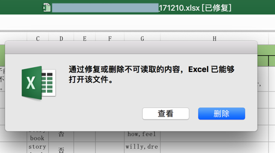
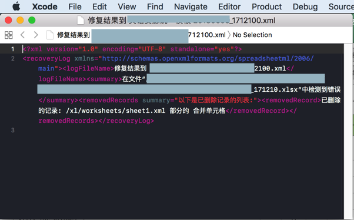
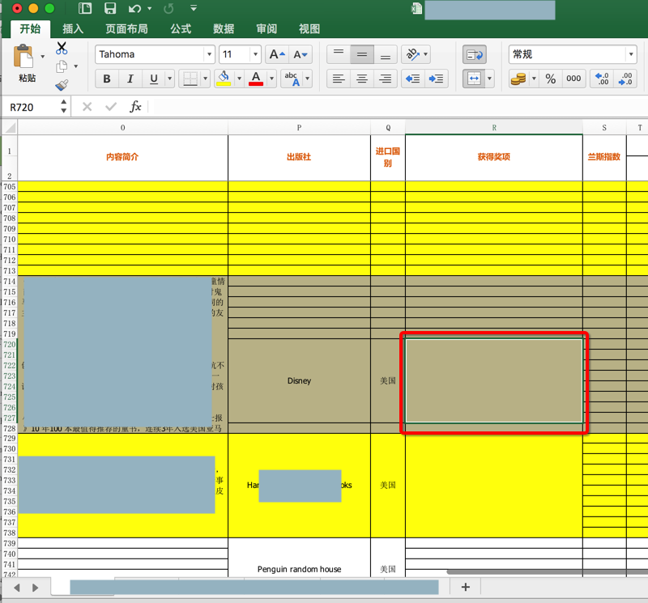

常见问题
警告：发现xlsx中的部分内容有问题。是否让我们尽量尝试恢复? 如果信任此工作簿的源，请单击"是"
背景：
用openpyxl去创建新excel文件，并从某原有excel中拷贝数据到新excel中
其中包括保留原先的合并后的单元格，比如：

相关代码是：
def keepPrevMergedCells(wsIn, wsInCurCellRange, wsInCurRowNum, wsOut, wsOutColNum):
"""
keep original excel’s merged cells
"""
logging.info("keepPrevMergedCells: wsIn=%s, wsInCurCellRange=%s, wsInCurRowNum=%s, wsOut=%s, wsOutColNum=%s",
wsIn, wsInCurCellRange, wsInCurRowNum, wsOut, wsOutColNum)
cellRangeValue = crifanLib.getCellRangeValue(wsIn, wsInCurCellRange)
rangeMinRow = wsInCurCellRange.min_row
rangeMinCol = wsInCurCellRange.min_col
rangeMaxRow = wsInCurCellRange.max_row
rangeMaxCol = wsInCurCellRange.max_col
logging.info("curCellRange: min_row=%s, min_col=%s, max_row=%s, max_row=%s",
rangeMinRow, rangeMinCol, rangeMaxRow, rangeMaxCol)
rowNumDiff = wsInCurRowNum – rangeMinRow
logging.info("rowNumDiff=%s", rowNumDiff)
curStartCol = wsOutColNum
curEndCol = wsOutColNum + (rangeMaxCol – rangeMinCol)
logging.info("curStartCol=%s, curEndCol=%s", curStartCol, curEndCol)
if rowNumDiff > 1:
wsOut.unmerge_cells(start_row=rangeMinRow,
start_column=curStartCol,
end_row=wsInCurRowNum – 1,
end_column=curEndCol)
wsOut.merge_cells(start_row=rangeMinRow,
start_column=curStartCol,
end_row=wsInCurRowNum,
end_column=curEndCol)
打开保存后的excel文件后报错：
发现 xlsx 中的部分内容有问题。是否让我们尽量尝试恢复? 如果信任此工作簿的源，请单击“是”。

点击是，然后再点击删除：

是可以打开的，且貌似数据也是对的：
调试过程：
点击查看，是打开了xml文件：
<?xml version="1.0" encoding="UTF-8" standalone="yes"?>
<recoveryLog xmlns="http://schemas.openxmlformats.org/spreadsheetml/2006/main"><logFileName>修复结果到 xxx2100.xml</logFileName><summary>在文件“/Users/xxx210.xlsx”中检测到错误</summary><removedRecords summary="以下是已删除记录的列表:"><removedRecord>已删除的记录: /xl/worksheets/sheet1.xml 部分的 合并单元格</removedRecord></removedRecords></recoveryLog>

最终调试到的现象是：
- 720行没问题
- 但是750行出问题
然后去原先文件看看是否有什么异常的情况：
最后找到了是原先的excel中的702 - 727行R列中：
是合并的单元格，但是内容却是空=None

根本原因：代码生成的excel中，某些单元格的值是无效的None，无法被Excel软件所识别
解决办法
- （不太推荐）办法1：忽略之
- 根据提示，正常打开excel，点击删除，会删除对应无效的值
- 后续即可正常使用excel文件
- 根据提示，正常打开excel，点击删除，会删除对应无效的值
（推荐）方法2：代码生成时，不要设置（Excel软件不支持的）
None等值- 即可彻底规避掉，不会产生此问题
修复后的相关代码是
def keepPrevMergedCells(wsIn, wsInCurCellRange, wsInCurRowNum, wsOut, wsOutColNum): """ keep original excel’s merged cells if merged cell range itself value is None, should NOT keep merged otherwise will cause generated excel file corrupted """ logging.info("keepPrevMergedCells: wsIn=%s, wsInCurCellRange=%s, wsInCurRowNum=%s, wsOut=%s, wsOutColNum=%s", wsIn, wsInCurCellRange, wsInCurRowNum, wsOut, wsOutColNum) cellRangeValue = crifanLib.getCellRangeValue(wsIn, wsInCurCellRange) if not cellRangeValue: logging.warning("Not keep previous None or empty value of merged cells") return # then wsOut.unmerge_cells and wsOut.merge_cells is ok